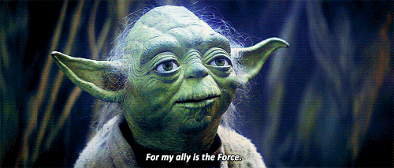

<footer>

    <div class="footer-wrapper">

        <div style="margin: 0 auto;padding: 10px;width: fit-content;position: relative">
            <span id="text">Экспериментируем с JQuery</span>
            <div class="tooltip_wrapper" style="display: none">
                <div class="tooltip-container">Воистину подобен чуду ум ребенка (Йода)</div>
                
            </div>
        </div>
    </div>

    <script>
        let tooltip = document.getElementsByClassName('tooltip_wrapper')[0];
        let tooltipTarget = document.getElementById('text');

        let isTooltipActive = false;

        tooltipTarget.addEventListener('mouseover',()=>{
            tooltip.style.display = 'block';
        });

        tooltipTarget.addEventListener('mouseleave',()=>{
            setTimeout(function () {
                if (!isTooltipActive){
                    tooltip.style.display = 'none';
                }
            },1000)
        });

        tooltip.addEventListener('mouseover',()=>{
           isTooltipActive = true;
        });

        tooltip.addEventListener('mouseleave',()=>{
            tooltip.style.display = 'none';
            isTooltipActive = false;
        });
        
    </script>
</footer>
